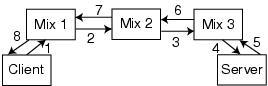

Figure 2: Retrieving a web page using a mix-net. (1) The client sends the layered encrypted URL to mix 1. (2) Mix 1 removes one layer of encryption from the URL and sends it to mix 2. (3) Mix 2 removes the next layer of encryption from the URL it received from mix 1 and sends it to mix 3. (4) Mix 3 removes the next layer of encryption from the URL it received from mix 2. This reveals the client requested URL. Mix 3 contacts the server, specified in the URL, and requests the specified document. (5) The server sends the requested document back to mix 3. (6) Mix 3 sends the document to mix 2. (7) Mix 2 sends the document to mix 1. (8) Mix 1 sends the document to the client.
Back to Article